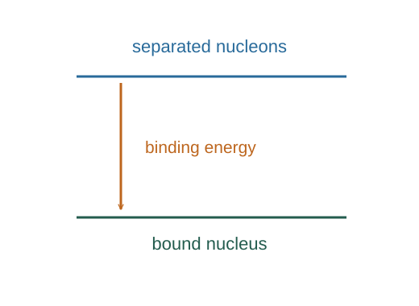

Derive nuclear binding energy from mass defect
A bound nucleus has less rest mass than the same nucleons separated. The difference records the energy that must be supplied to separate it, or that can be released in a suitable reaction.
What the symbols mean
Z: proton count; N: neutron count; B > 0: binding energy; mi, mf: total initial and final rest masses for a reaction.
When this applies
Consistent nuclear or atomic mass bookkeeping, all reaction products included, and relativistic total-energy conservation.

Define the separated reference state
Imagine Z free protons and N free neutrons at rest infinitely far apart. Their total rest energy sets the reference.
Compare with the bound nucleus
The nucleus at rest has energy mnucleusc². Their difference is the positive energy needed to disassemble a bound ground-state nucleus.
Generalize to a nuclear reaction
Total energy is conserved. A decrease in total rest mass becomes kinetic energy, radiation or other allowed energy forms among the products.
Go deeper at this stepWhy does rest mass carry energy?Derive the relativistic energy–momentum relationUse atomic masses carefully
Atomic tables include electron masses. If the electron count balances in the chosen reaction bookkeeping, those masses cancel; otherwise electron terms must be included. Electron binding corrections may also matter for precision.
Where each equation comes from
Derived equations link to an argument below. Definitions, physical postulates and constitutive models are identified as the inputs of that argument.
Derivation of the main resultDerived result
Conditions: Consistent nuclear or atomic mass bookkeeping, all reaction products included, and relativistic total-energy conservation.
- Define the separated reference state. Imagine Z free protons and N free neutrons at rest infinitely far apart. Their total rest energy sets the reference. Explain the equation used in step 1 ↗
- Compare with the bound nucleus. The nucleus at rest has energy mnucleusc². Their difference is the positive energy needed to disassemble a bound ground-state nucleus. Explain the equation used in step 2 ↗
- Generalize to a nuclear reaction. Total energy is conserved. A decrease in total rest mass becomes kinetic energy, radiation or other allowed energy forms among the products. Explain the equation used in step 3 ↗ Why does rest mass carry energy? ↗
- Use atomic masses carefully. Atomic tables include electron masses. If the electron count balances in the chosen reaction bookkeeping, those masses cancel; otherwise electron terms must be included. Electron binding corrections may also matter for precision.
Equation in step 1Derived result
What is being shown: Define the separated reference state
Imagine Z free protons and N free neutrons at rest infinitely far apart. Their total rest energy sets the reference.
Starting conditions and inputs: Consistent nuclear or atomic mass bookkeeping, all reaction products included, and relativistic total-energy conservation.
Equation in step 2Derived result
What is being shown: Compare with the bound nucleus
The nucleus at rest has energy mnucleusc². Their difference is the positive energy needed to disassemble a bound ground-state nucleus.
Earlier results used in this argument:
- Eseparated = (Zmp + Nmn)c² (Derived result)
Equation in step 3Derived result
What is being shown: Generalize to a nuclear reaction
Total energy is conserved. A decrease in total rest mass becomes kinetic energy, radiation or other allowed energy forms among the products.
Earlier results used in this argument:
- Eseparated = (Zmp + Nmn)c² (Derived result)
- B = Eseparated − mnucleusc² (Derived result)
A worked example
A mass defect of 0.010 unified atomic mass units corresponds to about 9.31 MeV because 1 u·c² ≈ 931.5 MeV.
Derivation behind this calculation ↗A point to keep straight
Do not mix a neutral-atom mass with bare proton counts without adjusting electrons. Positive Q means energy release; negative Q requires energy input.
Check the assumptions and derivation ↗